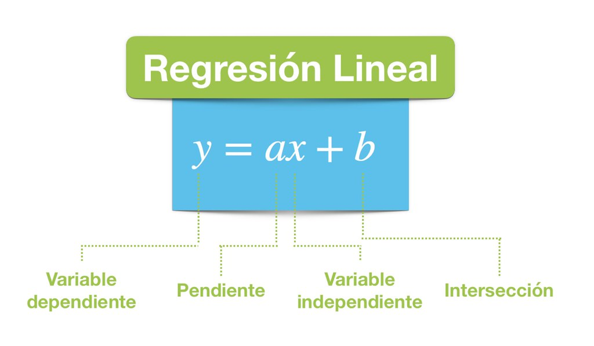
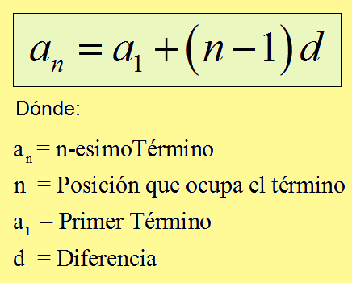

El análisis de la regresión lineal se utiliza para predecir el valor de una variable según el valor de otra. La variable que desea predecir se denomina variable dependiente. La variable que está utilizando para predecir el valor de la otra variable se denomina variable independiente.

Donde:
y: es la variable dependiente o la variable a predecir.
x: es la variable independiente o la variable que usamos para hacer una predicción.
a: es la pendiente o el valor que debe ser determinado, se le conoce como coeficiente y es una especie de magnitud de cambio que pasa por y cuando x cambia.
b: es la constante que debe ser determinada, se le conoce como intercepto porque cuando x es igual a 0, entonces y = b.
Esta es la ecuación de Regresión Lineal Simple. Se llama simple porque solo hay una variable independiente involucrada, que vendría siendo “x”.
PROGRESIONES
Sin ser demasiado rigurosos, podemos definir una sucesión (o progresión) numérica como un conjunto de números ordenados. A cada uno de estos números los llamamos términos de la sucesión:
a1 : es el primer término, a2 : es el segundo término, a3 : es el tercer término hasta an : es el n-ésimo término. Veamos las características que las definen:
En función del número que tengan, las sucesiones pueden ser finitas o infinitas.
Crecientes si cada término es mayor que su anterior, es decir:
an ≤ an+1 ó decrecientes si an ≥ an+1
Son aritméticas cuando cada término es la suma del término anterior más un número constante, al que llamamos diferencia y denotamos por d. su formula es: an =a1+d*(n-1) Si la diferencia
d
de la progresión es un número positivo, la progresión es creciente. Si
d
es negativo, la progresión es decreciente.

POR EJEMPLO: La progresión de los números impares es una secuencia infinita: 1, 3, 5, 7, 9, 11, 13, 15,... El primer término es a1=1 y el quinto término es a5=9.
Como se realiza una progresión:
1. Establecer los valores y para encontrar el término general 2. Establecer para encontrar la suma de los términos. 3. Establecer un valor cualquiera y para encontrar el término general 4. Establecer para encontrar la suma de los términos. 5. Establecer los valores cualesquiera y para encontrar el término general 6. Establecer para encontrar la suma de los términos.
ELEMENTOS NECESARIOS
TERMINO: Cada uno de las piezas o fracciones que se encuentran relacionadas entre si por los signos de suma y de resta en una expresión analítica
TERMINO CUALQUIERA (AN): Termino general de una sucesión al que ocupa un lugar cualquiera (n) de la misma
TERMINO INICIAL (AI): Es el primer o el termino mernor en la sucesión
DISTANCIA (D): La diferencia que existe entre termino y termino, se calcula restando el mayor menos el menor
POSICION (N): Cada número ocupa una posición y recibe el nombre de término